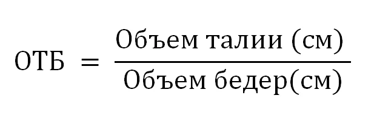

Отношение объема талии к объему бедер, также известное как отношение Талия/Бедра (ОТБ), является важным показателем для оценки распределения жира в организме. Этот показатель широко используется для оценки риска различных заболеваний, таких как сердечно-сосудистые заболевания и диабет.
Подкожный жир и висцеральный жир представляют две основные категории жира в организме.
Подкожный жир находится под кожей и служит резервом энергии, а также выполняет функцию теплоизоляции. В то время как небольшое количество подкожного жира вполне естественно, его избыток может привести к избыточному весу и ожирению.
Висцеральный жир, с другой стороны, накапливается в брюшной полости вокруг внутренних органов. Этот тип жира может иметь более негативное воздействие на здоровье. Он может способствовать развитию хронических заболеваний, таких как сердечно-сосудистые заболевания, диабет 2 типа и даже определенных видов рака.
Отношение Талия/Бедра является важным индикатором того, как жир распределен в организме. Считается, что жир, скопившийся в области живота, более активно вырабатывает химические вещества, которые могут негативно влиять на общее здоровье. Высокое отношение Талия/Бедра свидетельствует о большем количестве висцерального жира, что повышает риск различных заболеваний.
Множественные исследования показывают, что люди с высоким отношением Талия/Бедра более подвержены различным заболеваниям, включая:
Исследования также показывают, что изменения в образе жизни, включая физическую активность и правильное питание, могут снизить отношение Талия/Бедра и связанный с этим риск.
Отношение Талия/Бедра рассчитывается по следующей формуле:

Интерпретация значений:
| Для мужчин: | |
|---|---|
| менее 0.85 | Идеальный вес |
| 0.85-0.9 | Нормальный вес (низкий риск) |
| 0.9-0.95 | Избыточная масса тела (допустимый риск) |
| 0.95-1.0 | Ожирение (высокий риск) |
| 1 и более | Сильное ожирение (очень высокий риск) |
| Для женщин: | |
|---|---|
| менее 0.75 | Идеальный вес |
| 0.75-0.8 | Нормальный вес (низкий риск) |
| 0.8-0.85 | Избыточная масса тела (допустимый риск) |
| 0.85-0.9 | Ожирение (высокий риск) |
| 0.9 и более | Сильное ожирение (очень высокий риск) |
Данная формула представлена в разделе Расчеты → Соотношение Талия-Бедра приложения.
Окружность талии нужно измерять в самой узкой её части, как правило, чуть выше пупка.
Окружность бёдер также нужно измерять в самой широкой части ягодиц по самым выступающим точкам или боковой поверхности таза и бёдер.
Кроме того, в случае, если талия выпуклая, а не вогнутая, как например, это происходит во время беременности, ожирении и при различных особенностях строения тела, талия может быть измерена на горизонтальном уровне на расстоянии 2,5 см выше пупка.
Хотя отношение Талия/Бедра является полезным инструментом для оценки распределения жира, не стоит рассматривать его вакууме. Комбинированная оценка с другими показателями, такими как индекс массы тела (ИМТ) и процент жира, может предоставить более полную картину вашего здоровья и состава тела.
Также стоит отметить, что отношение талии к бедрам (ОТБ) отлично взаимодействует с отношением объема талии к росту (ОТР). Например, человек с нормальным ОТБ, но высоким ОТР, может все равно иметь некоторый риск из-за висцерального жира в области живота.
Комбинированный анализ обоих показателей может дать более глубокое понимание о распределении жира в организме и связанном с этим риске. Важно помнить, что ни один показатель не является идеальным предсказателем здоровья, и решения о питании, физической активности и заботе о здоровье следует принимать комплексно.
Отношение объема талии к объему бедер является важным показателем для оценки распределения жира и риска заболеваний. Высокое отношение Талия/Бедра может указывать на нежелательное распределение жира в организме. Однако стоит помнить, что это всего лишь один из индикаторов, и решения о здоровье и питании следует принимать на основе всесторонней оценки и консультации с медицинскими специалистами.